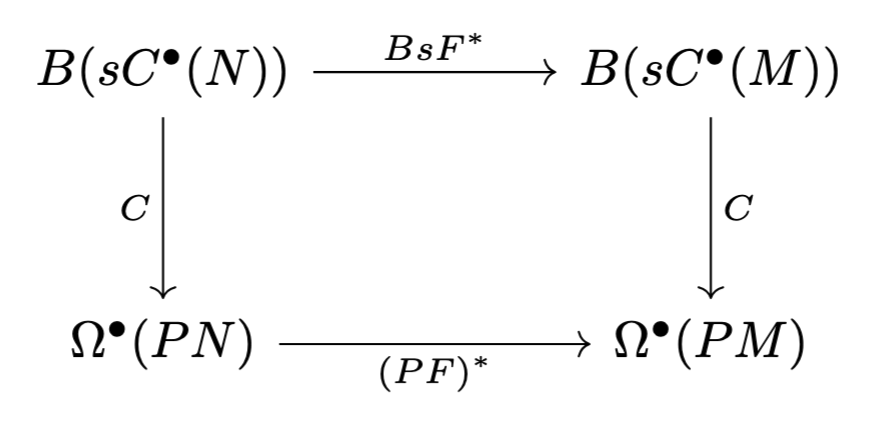

The \(A_{\infty}\) -De Rham theorem and integration of representations up to homotopy
Table of Contents
1. Introduction
This post is meant to go through, in detail, some results of a paper (of the same title as this blog post) which I focused on reading last summer, as part of an independent project supervised by Prof. Marco Gualtieri. In addition to the things I will discuss below, I also spent some time thinking about "topological analogues" of the Chen map, which I will not include now, but will go through in detail in a future post.
2. Overview of the \(A_{\infty}\) -De Rham theorem
Unlike the original paper, I am going to delay discussion of "integration of representations up to homotopy" part of this paper until we first prove the \(A_{\infty}\) -De Rham theorem. The notion of an \(A_{\infty}\) -algebra is supposed to capture higher-homotopy behaviour of particular spaces.
Definition 2.1. An \(A_{\infty}\) -algebra is a \(\mathbb{Z}\) -graded vector space \(A\) along with degree-one linear maps \(b_n : (sA)^{\otimes n} \rightarrow sA\) (note that \(sA\) is the suspection of \(A\), which is defined via \((sA)^k = A^{k + 1}\). In other words, all degree- \(k\) elements of \(A\) are degree- \((k - 1)\) in \(sA\)). Remember that a \(\mathbb{Z}\) -graded vector space is simply a vector space \(V\) and a map \(j : \mathbb{Z} \rightarrow V\) such that \(j(n) = V_n\) is a subspace for each \(n\), and such that \(V\) is the direct sum of the \(V_n\). If \((V, j)\) is a \(\mathbb{Z}\) -graded vector space, then \(sV\) is used to denote \((V, j - 1)\). We also use the notation \(s : (V, j) \rightarrow (V, j - 1)\) to denote the identity map, and \(s^{-1}\) its inverse.
The maps \(b_n\) satisfy for each \(n \geq 1\),
\begin{equation} \label{eq:1} \sum_{i + j + k = n} b_{i + k + 1} \circ (\text{id}^{\otimes i} \otimes b_j \otimes \text{id}^{\otimes k}) = 0 \end{equation}We will always assume the Koszul sign convention,
Definition 2.2. If \(A\) and \(B\) are graded vector spaces, and \(f : A \rightarrow A\), \(g : B \rightarrow B\) are graded maps, the map \(f \otimes g : A \otimes B \rightarrow A \otimes B\) is defined as
\begin{equation} (f \otimes g)(a \otimes b) = (-1)^{|g| |a|} (f(a) \otimes g(b)) \end{equation}Note that in the case that \(n = 1\), the only triple in the sum of Eq. \eqref{eq:1} is \((0, 1, 0)\), which gives \(b_1^2 = 0\). Therefore, \((sA, b_1)\) is a cochain complex. For \(n = 2\), we have tuples \((0, 2, 0)\), \((1, 1, 0)\), \((0, 1, 1)\). Thus yields
\begin{equation} b_1 \circ b_2 + b_2 \circ (\text{id} \otimes b_1) + b_2 \circ (b_1 \otimes \text{id}) \end{equation}so that if we have some \(sa_1 \otimes sa_2 \in (sA)^{\otimes 2}\), then
\begin{equation} (b_1 \circ b_2)(sa_1 \otimes sa_2) + (-1)^{|sa_1|} b_2 (sa_1 \otimes b_1(sa_2)) + b_2 (b_1(sa_1) \otimes sa_2) = 0 \end{equation}and so on. These equations might seem somewhat opaque, but a good instance of a simple \(A_{\infty}\) -algebra is any differential graded algebra \((A, d, \wedge)\). In particular, \(A\) is an \(A_{\infty}\) -algebra where \(b_1 : sA \rightarrow sA\) is given by \(b_1(sa) = s da\), \(b_2(sa_1 \otimes sa_2) = s(a_1 \wedge a_2)\). To see this, we immediately know from the definition that \(b_1^2 = 0\), as \(d^2 = 0\). In addition, we have via the Leibniz rule that DGAs must satisfy,
\begin{align} (b_1 \circ b_2)(sa_1 \otimes sa_2) = b_1(s(a_1 \wedge a_2)) = s d(a_1 \wedge a_2) &= s( da_1 \wedge a_2 + (-1)^{|a_1|} a_1 \wedge da_2) \\ &= b_2( sda_1 \otimes sa_2) + (-1)^{|a_1|} b_2(sa_1 \otimes sda_2) \\ &= b_2 (b_1(s a_1) \otimes sa_2) + (-1)^{|a_1|} b_2(sa_1 \otimes b_1(sa_2)) \end{align}3. The Chen map
Let \(M\) be a finite-dimensional, compact, orientable smooth manifold. The Chen iterated integral is a map
\begin{equation} C : B(s \Omega^{\bullet}(M)) \rightarrow \Omega^{\bullet}(PM) \end{equation}where \(s\) is the suspension of the graded algebra \(\Omega^{\bullet}(M)\): the De Rham complex of piecewise smooth differential forms on \(M\) (if \(A\) is a graded algebra, then the suspension \(sA\) is the graded algebra with the grading increased by \(1\), \((sA)^k = A^{k + 1}\)). \(B\) denotes the bar complex (for an algebra \(A\), \(BA = \bigoplus_{k \geq 1} A^{\otimes k}\)). \(PM\) is the piecewise-smooth path space of \(M\).
Definition 2.1. Given smooth manifold \(M\), the piecewise-smooth path space \(PM\) is the set of all piecewise smooth \(\gamma : [0, 1] \rightarrow M\). Let \(PM^{\infty} = C^{\infty}([0, 1], M) \subset PM\) be the subset consisting of smooth paths. We take the \(C^1\) -topology to be the initial topology of the map \(\Gamma : C^{\infty}([0, 1], M) \rightarrow C^{\infty}([0, 1], M) \times C^{\infty}(T[0, 1], TM)\) taking \(\gamma \mapsto (\gamma, \gamma_{*})\), where the range is endowed with the compact-open topology on each factor. We then define a topology on \(PM\) by taking the final topology of the inclusion \(\iota : C^{\infty}([0, 1], M) \rightarrow PM\).
Given finite-dimensional smooth manifold \(X\), we say that a map \(f : X \rightarrow PM\) is (piecewise) smooth if the map \(\widetilde{f} : X \times [0, 1] \rightarrow M\) given by \(\widetilde{f}(x, t) = f(x)(t)\) is (piecewise) smooth.
Definition 2.2. The idea for defining a differential form on path space \(PM\) is some object \(\eta\) which we can evaluate on smooth \(f : X \rightarrow PM\) to give us a "pullback" to \(f^{*} \eta \in \Omega^{\bullet}(X)\). Thus, we let \(\mathcal{C} = C^{\infty}(-, PM)\) be the category of finite dimensional smooth manifolds \(X\) and smooth maps \(f : X \rightarrow PM\), with an arrow from \((X, f)\) to \((Y, g)\) being some smooth map \(h : X \rightarrow Y\) where \(f = g \circ h\). Let \(\underline{\mathbb{R}} : \mathcal{C} \rightarrow \textbf{Vect}\) be the usual constant functor. We then have functor \(\Omega : C^{\infty}(-, PM) \rightarrow \textbf{Vect}\) which takes \((X, f)\) to \(\Omega^{\bullet}(X)\) to \(h\) to \(h^{*}\). A differential form on \(PM\), \(\eta \in \Omega^{\bullet}(PM)\), is a natural transformation from \(\underline{\mathbb{R}}\) to \(\Omega\), which is to say a family of morphisms \(\eta(X, f) : \mathbb{R} \rightarrow \Omega^{\bullet}(X)\) (each of which can be identified with some element of \(\Omega^{\bullet}(X)\)) such that if \(h : X \rightarrow Y\) is a smooth map such that \(f = g \circ h\) with \(g : Y \rightarrow PM\) another smooth function, then
\begin{equation} \eta(X, g \circ h) = \eta(X, f) = h^{*} \circ \eta(Y, g) \end{equation}which is how we expect forms to act under pullback. It follows that we will often use the notation \(\eta(X, f) = f^{*} \eta\).
Both \(B(s\Omega^{\bullet}(M))\) and \(\Omega^{\bullet}(PM)\) have associated coboundary operators that make them differential graded algebras (DGA). For the case of the bar complex, given arbitrary DGA \((A, d, \wedge)\), we may define a couboundary \(D : B(sA) \rightarrow B(sA)\) given by
\begin{align} D(sa_1 \otimes \cdots \otimes sa_n) & = \sum_{i = 1}^{n} (-1)^{[a_1] + \cdots + [a_{i-1}]} sa_1 \otimes \cdots \otimes sa_{i-1} \otimes s(da_{i}) \otimes sa_{i+1} \otimes \cdots \otimes sa_{n} \nonumber \\ &+ \sum_{i = 1}^{n-1} (-1)^{[a_1] + \cdots + [a_{i}]} sa_1 \otimes \cdots \otimes sa_{i-1} \otimes s(a_i \wedge a_{i+1}) \otimes sa_{i+2} \otimes \cdots \otimes sa_n. \\ & := d_{\otimes}(sa_1 \otimes \cdots \otimes sa_n) + d_{\wedge}(sa_1 \otimes \cdots \otimes sa_n) \end{align}where \([a_k]\) is the degree of \(a_k \in A\) (a graded algebra). One can verify that \(D \circ D = 0\). Note that \(D\) is a degree- \(1\) map. Clearly, \(d_{\otimes}\) is. As for \(d_{\wedge}\), removing \(sa_i\) and \(sa_{i+1}\) from the tensor product decreases degree by \([a_i] + [a_{i+1}] - 2\), and adding \(s(a_i \wedge a_{i+1})\) increases it by \([a_i \wedge a_{i+1}] - 1 = [a_i] + [a_{i+1}] - 1\). Thus, there is a net degree-increase of \(1\).
As for \(\Omega^{\bullet}(PM)\), we define a wedge product and a coboundary by simply using the pullback under any function \(f : X \rightarrow PM\). Specifically, for \(\omega, \eta \in \Omega^{\bullet}(PM)\), we define
\begin{equation} f^{*}(\eta \wedge \omega) := f^{*}\eta \wedge f^{*}\omega \ \ \ \ \text{and} \ \ \ \ f^{*}(d\eta) := d f^{*}\eta. \end{equation}Verifying that both \((B(s\Omega^{\bullet}(M)), D)\) and \((\Omega^{\bullet}(PM), d)\) are both DGAs is straightforward. Going forward, let \(\overline{D}\) be the bar differential associated to the DGA \((s\Omega^{\bullet}(M), -d, \wedge)\), where we flip the sign of \(d\).
Definition 2.3. Given a map \(f : X \rightarrow PM\), where \(X\) is a finite-dimensional smooth manifold, recall that \(\widetilde{f} : [0, 1] \times X \rightarrow M\) is defined as \(\widetilde{f}(t, x) = f(x)(t)\). We then define \(\widetilde{f}_{(m)} : \Delta^m \times X \rightarrow M^{\times m}\) as
\begin{equation} \widetilde{f}_{(m)}(t_1, \dots, t_m, x) = (\widetilde{f}(t_1, x), \dots, \widetilde{f}(t_m, x)) \end{equation}with \(\Delta^m\) the standard \(m\) -simplex, \(\Delta^m = \{(t_1, \dots, t_m) \ | \ 0 \leq t_1 \leq \cdots \leq t_m \leq 1\}\).
Remark 2.1. There are two standard conventions one can use for the \(k\) -simplex: the first is all \(k\) -tuples \((t_1, \dots, t_k)\) such that \(1 \geq t_1 \geq \cdots \geq t_k \geq 0\). The second is all \((k + 1)\) -tuples \((t_0, \dots, t_k)\) such that \(t_0 + \cdots + t_k = 1\) and \(t_j \in [0, 1]\) for each \(j\). We refer to these as the first model and second model of the simplex respectively. Usually, we use the first model. These two models are canonically homeomorphic.
Definition 2.4 (Chen map). Let \(M\) be a finite-dimensional compact orientable smooth manifold, then \(C : B(s\Omega^{\bullet}(M)) \rightarrow \Omega^{\bullet}(PM)\) is given by
\begin{equation} f^{*} C(s\omega_1 \otimes \cdots \otimes s\omega_m) = (-1)^{\sum_{i=1}^{m} [\omega_i] (m - i)} \pi_{*} \widetilde{f}_{(m)}^{*}(\pi_1^{*} \omega_1 \wedge \cdots \wedge \pi_m^{*} \omega_m) \end{equation}where \(\pi_j : M^{\times m} \rightarrow M\) is the projection onto the \(j\) -th factor and \(\pi_{*}\) is the fibre integral over the trivial product fibre bundle structure on \(\Delta^{m} \times X\), sending \(\Omega(\Delta^{m} \times X)\) to \(\Omega(X)\) (I talked about this in great detail in my first ever blog post. For details, check it out).
Remark 2.2. Note that \(s\omega_1 \otimes \cdots \otimes s\omega_m\) is an element of degree \(([\omega_1] - 1) + \cdots + ([\omega_m] - 1) = [\omega_1] + \cdots + [\omega_m] - m\) in the bar complex, which is taken to element of degree \([\omega_1] + \cdots + [\omega_m]\), \(\widetilde{f}_m^{*}(\pi_1^{*} \omega_1 \wedge \cdots \wedge \pi_m^{*} \omega_m)\), and then is integrated over dimension- \(m\) fibre to obtain a degree \([\omega_1] + \cdots + [\omega_m] - m\) form on the path space, so \(C\) is a degree- \(0\) map.
The Chen map has some nice properties.
Lemma 2.1. If \(M\) and \(N\) are both smooth manifolds, let \(F : M \rightarrow N\) be a smooth map. Then the following diagram commutes:

where \(BsF^{*}(s\omega_1 \otimes \cdots \otimes s\omega_m) = sF^{*}\omega_1 \otimes \cdots \otimes sF^{*}\omega_m\) and \(PF(\gamma) = F \circ \gamma \in PN\) for \(\gamma \in PM\).
Theorem 2.1 (Chen's theorem). For any \(s\omega_1 \otimes \cdots \otimes s\omega_m \in B(s\Omega^{\bullet}(M))\), we have
\begin{multline} (d \circ C)(s\omega_1 \otimes \cdots \otimes s\omega_m) = (C \circ \overline{D})(s\omega_1 \otimes \cdots \otimes s\omega_m) + \\ \text{ev}_1^{*}(\omega_1) \wedge C(s\omega_2 \otimes \cdots \otimes s\omega_m) - (-1)^{[\omega_1] + \cdots + [\omega_{m-1}]} C(s\omega_1 \otimes \cdots \otimes s\omega_{m-1}) \wedge \text{ev}_{0}^{*}(\omega_m) \end{multline}where \(\text{ev}_i : PM \rightarrow M\) takes \(\gamma\) to \(\gamma(i)\) for \(i \in \{0, 1\}\).
This result is important in that it allows us to show that closed elements of the bar complex give rise to homotopy functionals on path space. In particular, given some collection of forms \(\omega_1, \dots, \omega_m\) on \(M\) such that \([\omega_1] + \cdots + [\omega_m] = k\), note that \(\eta = C(s \omega_1 \otimes \cdots \otimes s \omega_m)\) will be an element of \(\Omega^{k - m}(PM)\), a form on path space. Let \(H : X \rightarrow PM\) be the smooth function into path space. In the case that \(\dim(X) = k - m + 1\) and \(X\) is compact oriented, we can integrate:
\begin{equation} \int_{X} H^{*} d \eta = \int_{X} d H^{*} \eta = \int_{\partial X} H^{*} \eta \end{equation}by the usual Stokes' theorem. In the case that \(\overline{D}(s\omega_1 \otimes \cdots \otimes s\omega_m) = 0\), then we will have from Chen's theorem
\begin{align} H^{*} d\eta &= (H^{*} \circ \text{ev}^{*}_1)(\omega_1) \wedge H^{*} C(s\omega_2 \otimes \cdots \otimes s\omega_m) - (-1)^{[\omega_1] + \cdots + [\omega_{m-1}]} H^{*} C(s\omega_1 \otimes \cdots \otimes s\omega_{m-1}) \wedge (H^{*} \circ \text{ev}^{*}_0)(\omega_m) \\ &= H_1^{*} \omega_1 \wedge H^{*} C(s\omega_2 \otimes \cdots \otimes s\omega_m) - (-1)^{m} H^{*} C(s\omega_1 \otimes \cdots \otimes s\omega_{m-1}) \wedge H_0^{*} \omega_m \end{align}where \(H_0(x) = H(x)(0)\) and \(H_1(x) = H(x)(1)\). This gives us the following result.
Lemma 2.2. If \(\omega_1, \dots, \omega_m\) are forms on manifold \(M\) such that \([\omega_1] + \cdots + [\omega_m] = k\) and \(\overline{D}(s \omega_1 \otimes \cdots \otimes s\omega_m) = 0\), \(X\) is a manifold of dimension \(k - m + 1\), and \(H : X \rightarrow PM\) is a smooth map such that every element of \(H(X)\) has the same start and endpoints. Then
\begin{equation} \int_{\partial X} H^{*} \eta = 0 \end{equation}where \(\eta = C(s\omega_1 \otimes \cdots \otimes s\omega_m)\).
Corollary 2.1. If \(\omega_1, \dots, \omega_m\) are a collection of one-forms such that \(\overline{D}(s \omega_1 \otimes \cdots \otimes s\omega_m) = 0\), then \(C(s\omega_1 \otimes \cdots \otimes s\omega_m) \in \Omega^0(PM)\) is constant on path-homotopic paths.
Proof. If \(H : [0, 1] \times [0, 1] \rightarrow M\) is a path-homotopy of \(\gamma_1\) and \(\gamma_2\), so \(H(s, 0) = \gamma_1(s)\) and \(H(s, 1) = \gamma_2(s)\), and \(H(0, t)\) and \(H(1, t)\) are constant, then \(\widetilde{H} : [0, 1] \rightarrow PM\) with \(\widetilde{H}(t)(s) = H(s, t)\) maps \([0, 1]\) to a family of paths with the same endpoints, so
\begin{equation} 0 = \int_{\partial [0, 1]} \widetilde{H}^{*} \eta = \eta(\widetilde{H}(1)) - \eta(\widetilde{H}(0)) = \eta(\gamma_1) - \eta(\gamma_2) \end{equation}from the previous lemma.